Первый этаж — создаёт ощущение, что вы пришли не в казино, а в пространство вкуса. Белый цвет здесь — про чистоту решения: будто вы ещё можете выйти и ничего не потерять.
Функция уровня — успокоить, очаровать и незаметно подготовить к переходу в игру.
